Web Designer · UI/UX Designer · Photographer
I'm Britney Jessica, an informatics student exploring web design, UI/UX, and photography. This portfolio brings together two sides of my creative practice — digital interfaces I design and moments I capture through my lens.
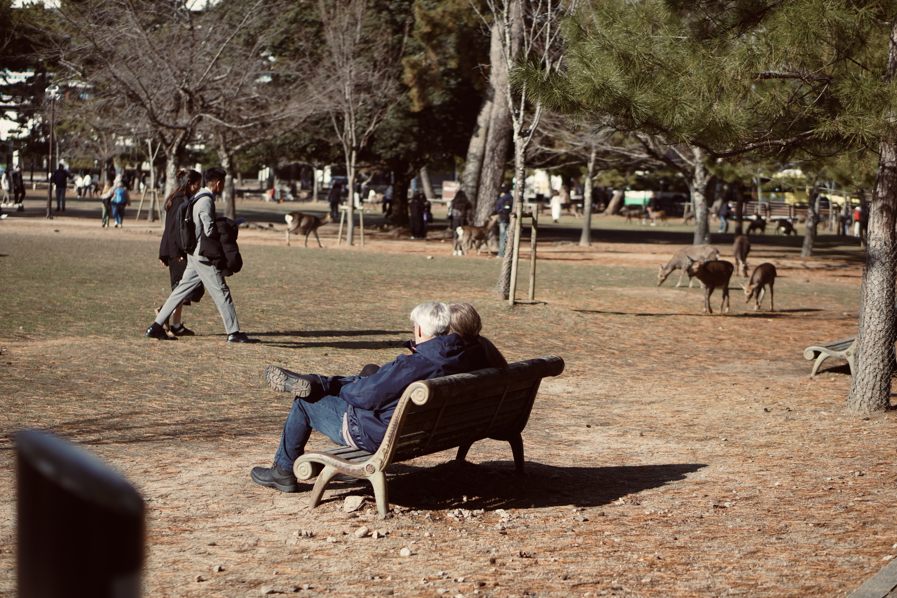
01 · 50mm Nara Park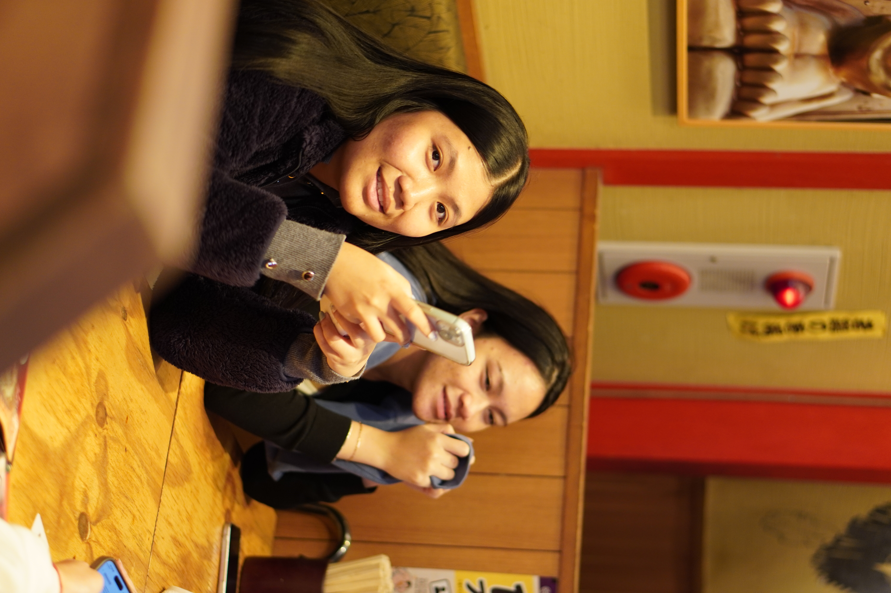
02 · 50mm Snoopy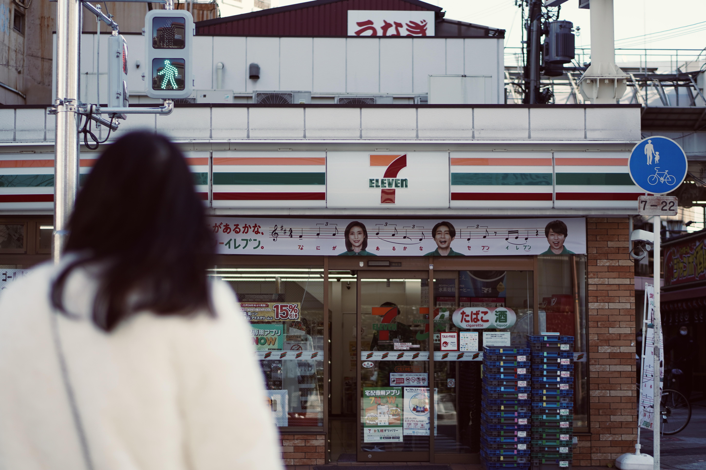
03 · 50mm Seven Eleven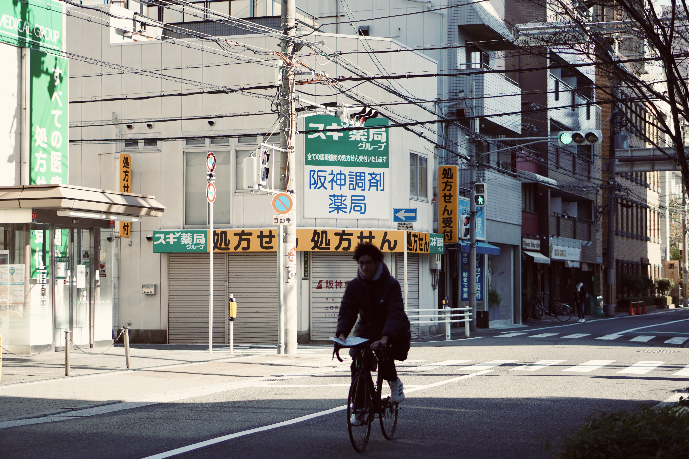
04 · 50mm Bike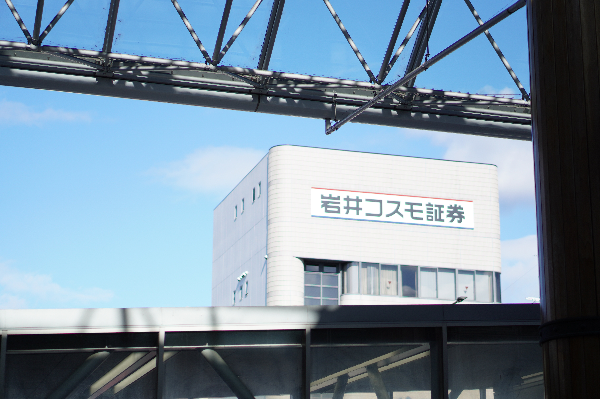
05 · 50mm Somewhere in Japan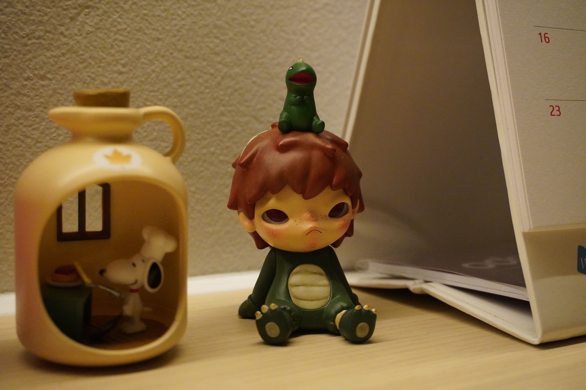
06 · 35mm Hirono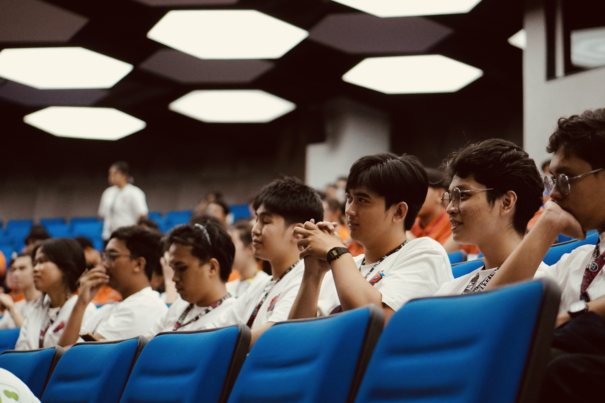
07 · 50mm PPIF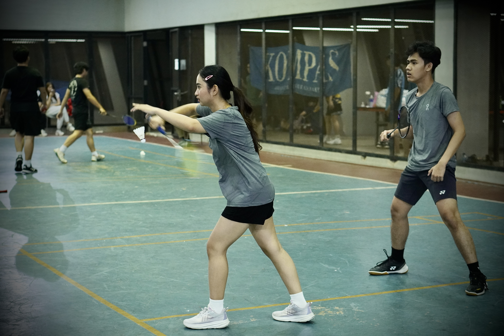
08 · 50mm Mixed Doubles Badminton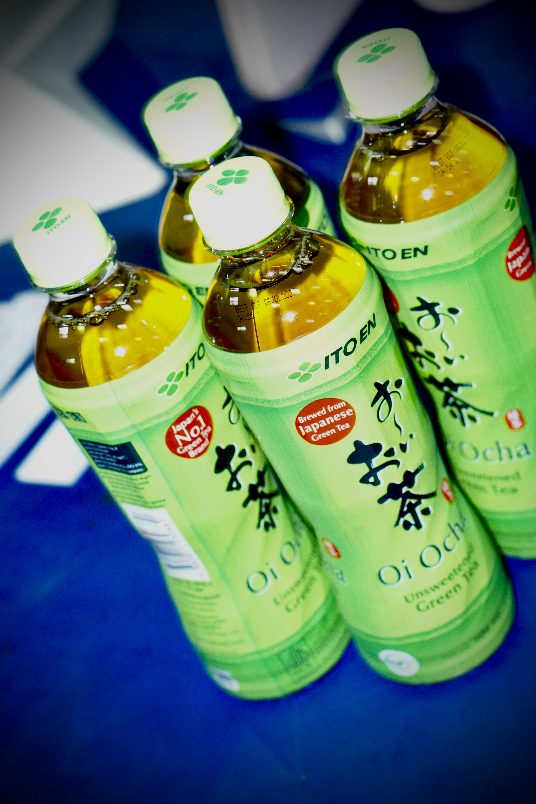
09 · 50mm Ito en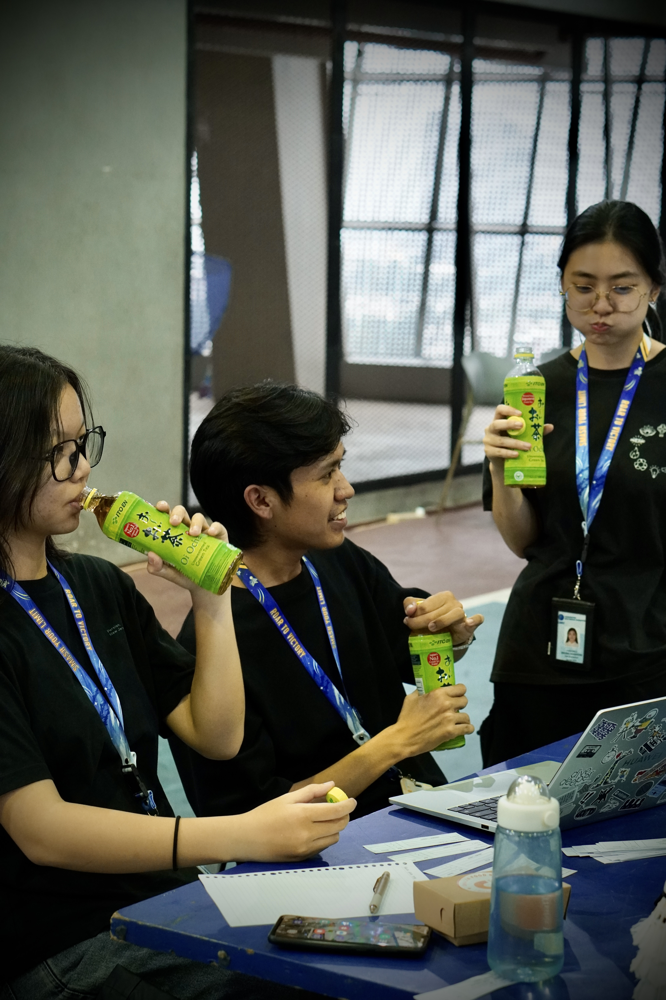
10 · 50mm Ito en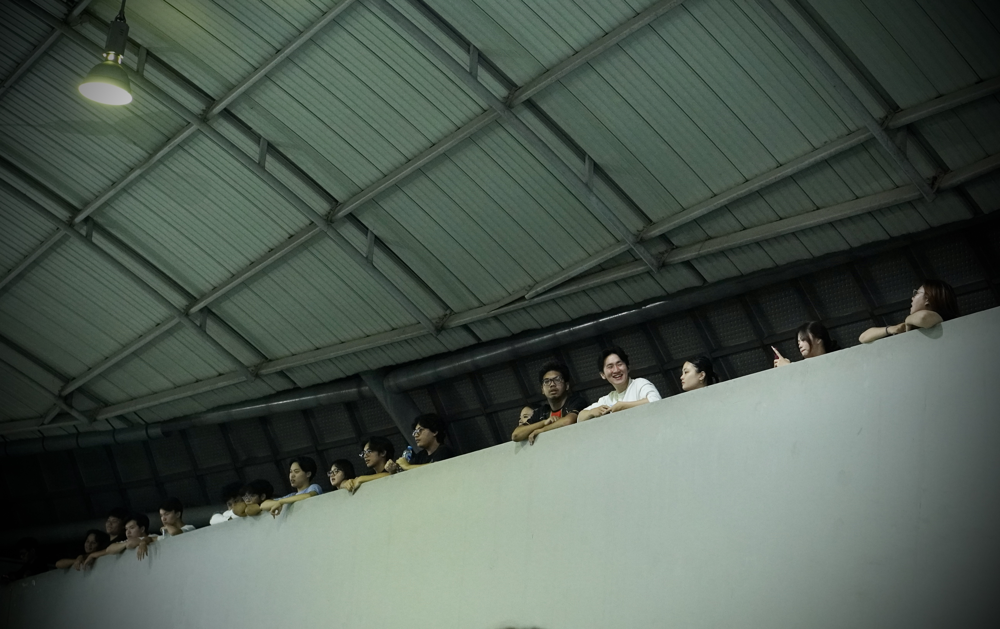
11 · 50mm Spectator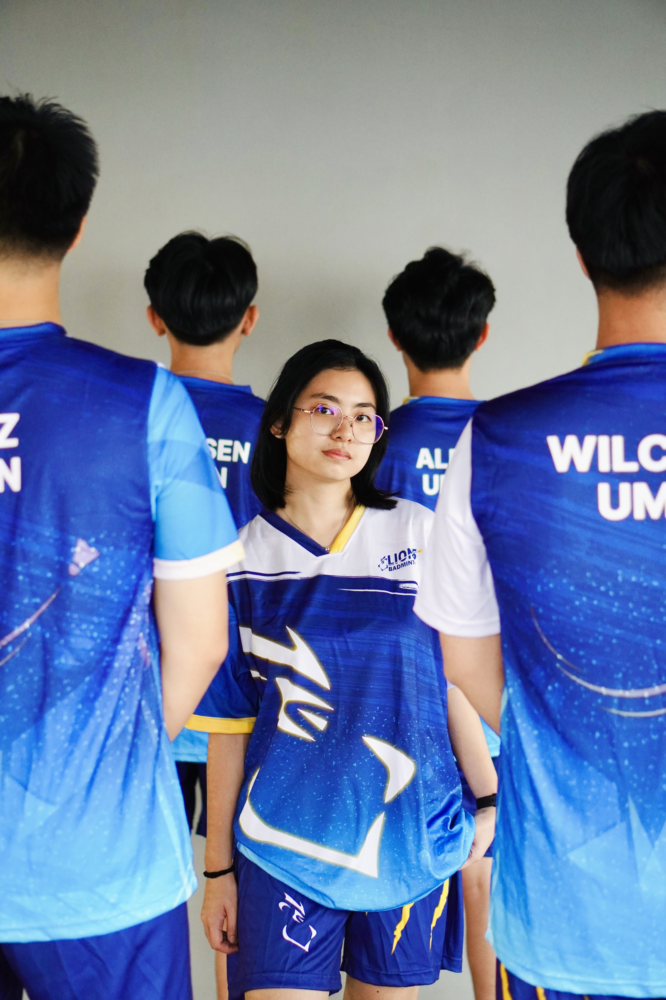
12 · 35mm Leaving, togetherI'm an Informatics student who never quite put the camera down.
I got into web design through university projects, where I started building websites and experimenting with layouts, typography, and the little interactions that make a page feel more alive.
Since then, I've also been exploring UI/UX and mobile app design, which I really enjoy because I get to think about both how something looks and how people use it.
Photography is something I picked up along the way and still enjoy doing in my free time.
It has also helped me pay more attention to composition, light, and the small details around me.
Right now, I'm looking for an internship where I can keep learning, work on real projects, and grow as a designer.
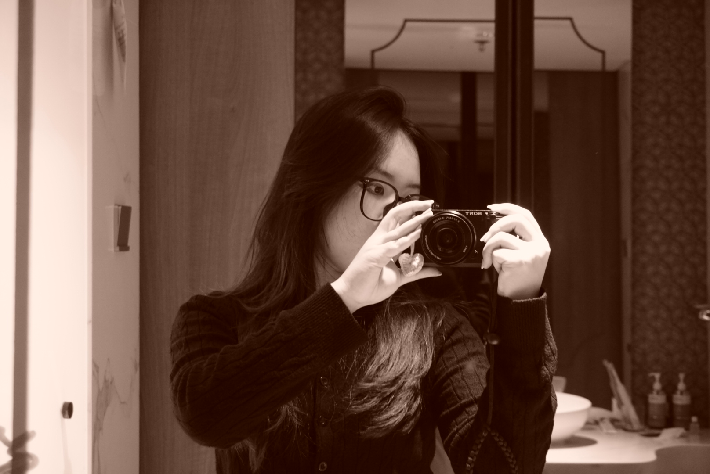